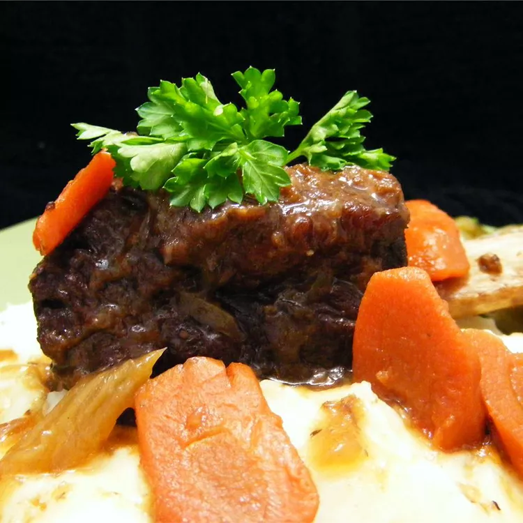

Beef short ribs

Description
No oven is needed for this beef short rib recipe. Instead, your stovetop does double duty,
first in searing flour-dredged ribs, then in simmering them with vegetables and herbs in a savory mixture of wine and stock.
This dish is great served over mashed potatoes.
Ingredients
- 4 pounds beef short ribs
- salt and pepper to taste
- 1 cup all-purpose flour
- ½ cup olive oil
- 2 cups chopped onions
- 1 cup chopped celery
- 1 cup chopped carrots
- 2 tablespoons minced garlic
- 1 tablespoon dried thyme
- 3 large bay leaves
- 1 cup red wine
- 8 cups beef stock
- ¼ cup chopped fresh parsley
Steps
- Season ribs with salt and pepper, then dredge in flour.
-
Heat oil in a large pot over medium-high heat. Sear ribs in hot oil in small batches,
adding oil as needed, 2 to 3 minutes per batch. Transfer to a plate.
-
Add onions to the pot and sauté for 2 minutes. Add celery and carrots; sauté for 1 minute.
Season with salt and pepper, then stir in garlic, thyme, and bay leaves. Cook until fragrant, about 1 minute.
-
Pour wine into the pot and bring to a boil while scraping the browned bits of food off the bottom of the pan with a
wooden spoon. Add stock and bring to a boil. Reduce the heat to low; add ribs and simmer until meat pulls away easily
from the bone and sauce has thickened, about 2 hours.
An instant-read thermometer inserted into the center should read 145 degrees F (63 degrees C).
- Discard bay leaves. Stir in parsley and serve.